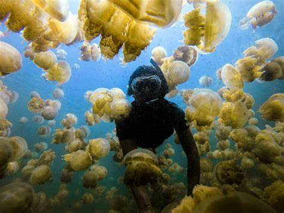
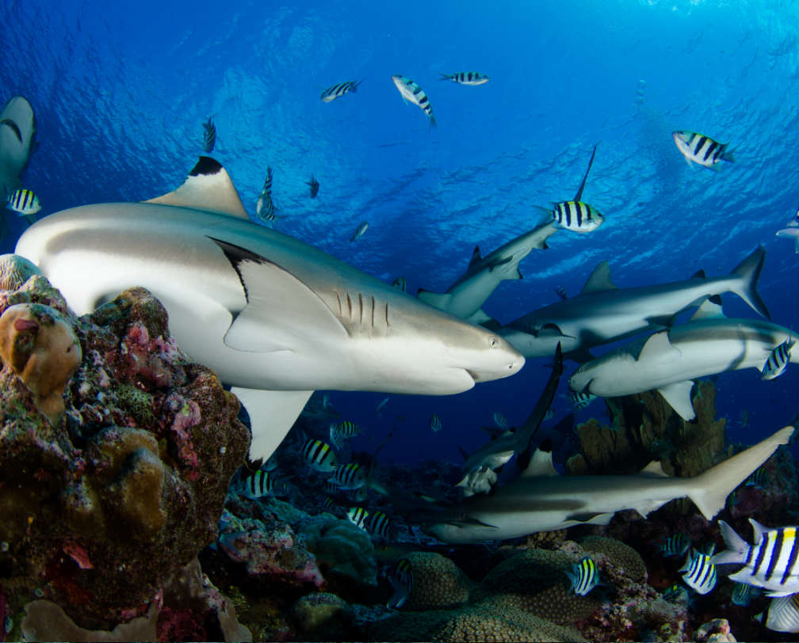
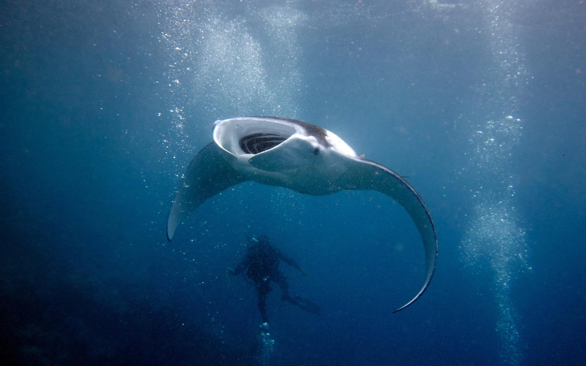
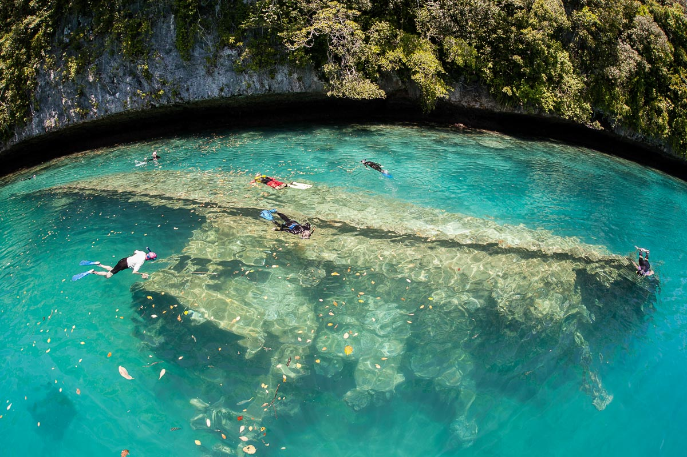

Explore the Underwater World of Palau
Palau is renowned for its crystal-clear waters and diverse marine life, making it one of the best scuba diving destinations in the world. With hundreds of species of fish, sharks, and vibrant coral reefs, Palau offers some of the most pristine underwater ecosystems in the Pacific Ocean.
Some of the Iconic Aquatic Life

Jellyfish

Shark

Manta Ray
Other Incredible Species
- Napoleon Wrasse
- Clownfish
- Palauan Seahorse
- Moray Eels
- Schools of Bumphead Parrotfish
Stunning Underwater Photography
The vibrant reefs of Palau offer some of the most spectacular marine life and underwater photography opportunities. The reefs are teeming with life and rich with color, providing a stunning backdrop for any dive.